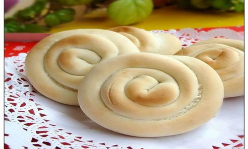
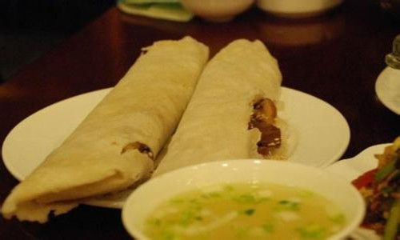
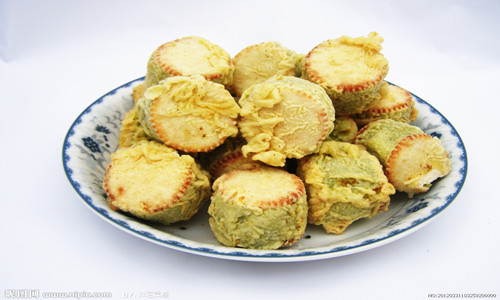
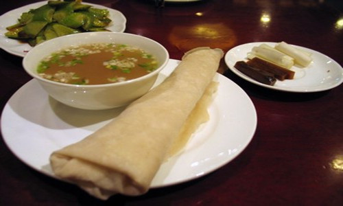
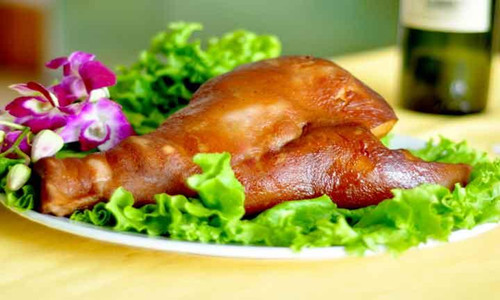

| 首页 | 美食 | 旅游 | 联系我们 |
特产美食 |
|  |
杠子头潍坊有名的硬面食品。和硬面，用枣木杠子压。中间薄，有孔，边厚。古时，用麻绳串成串，挂在鞍边、车旁，食之方便。凉吃越嚼越香；热吃，用菜、肉去烩，柔韧不散，非常有味。 |
|  |
马宋饼昌乐名吃，出自昌乐县马宋镇马宋村。距今已有200多年的历史，经数世不衰，久食不腻。1997年被中国烹饪协会、山东省贸易厅分别认定为“中华名小吃”、“山东名小吃”。和面、醒面、擀烙是制作马宋饼的3道主要工序。用比例适中的温食盐水，将优等面粉搅拌成团，反复揉搓，待质地光亮后以包袱覆之。面团似流非流时，移于面案，撕为小块。将小面团压平后，再三层合一，中间面团两面涂花生油，随即擀压，使之薄如铜钱，形似圆盘，摊至火候适中的铁鏊上，颜色白中带黄时，取下凉透即成。马宋饼的特点是烙花细碎，熟而不糊，色泽艳丽，柔软芳香，油丰而不腻，微咸而透清香，开人胃口，百食不厌。 |
|  |
绿豆糕产于安丘市景芝镇，已有二百多年的历史，其特点是工艺独到，风味奇特，呈淡黄色，结构松软，富有弹性，味道甜美，入口即化，还能消暑解毒，清肺利痰。分单料、全料两种。单料用绿豆和白糖制成。将绿豆煮熟晾干，去皮、磨细，加白糖调匀，用细筛筛在特制的方形蒸笼内，用铜铲压匀，割为适宜的长方形，蒸熟即成，全料绿豆糕，另加青红丝、玫瑰酱、核桃仁、桔饼等佐料，多味并重，年长及喜清淡者食用，倍感新鲜爽口。 |
|  |
朝天锅清朝初年，有一屠户在潍县城白浪河滩大集上支起一口大锅，把屠宰下来的猪心、肺、肠、肚等洗净放到大锅里煮烂，让赶集的人们围锅而坐，用荷叶饼卷肉吃，喝汤不收钱，人们因为锅子是露天的，就给这种实惠又好吃的吃法取了个简单响亮的名字做“朝天锅”。把一精致圆桶锅置于特制的餐桌中央，可加温，将精选的猪下货用老汤分别煮烂放到圆桶锅内，用猪骨、老鸡炖的汤继续加温，另备熟鸡蛋、大头丸子、驴肉等，并提供六个餐前开胃小菜和葱末、香菜末、萝卜条、咸菜条、蒜泥、芝麻盐等各式调料，由厨师根据客人要求将原料切碎用荷叶饼卷好给客人食用，客人可根据自己的口味调汤。 |
|  |
芝畔烧肉安丘市芝畔村素以制作烧肉驰名，相传始于明代。其主料是猪头和猪肠、肚等内脏及蹄等。制作时，先用细盐轻搓几遍，然后放入原汤锅中煮两小时左右。煮时放入用纱袋装好的豆蓉、砂仁、肉桂、八角、茴香等佐料。煮熟的肉捞出，放在锅内，不加水，用急火将锅绕红，再将红糖、谷糠撒在锅底，用锅内升腾的青烟将肉熏成橙黄色即成。其特点是：肥而不腻，油而清爽，食时有一股淡淡的、独特的燎烟香味。 |
© copyright 刘禹舟170201064 |